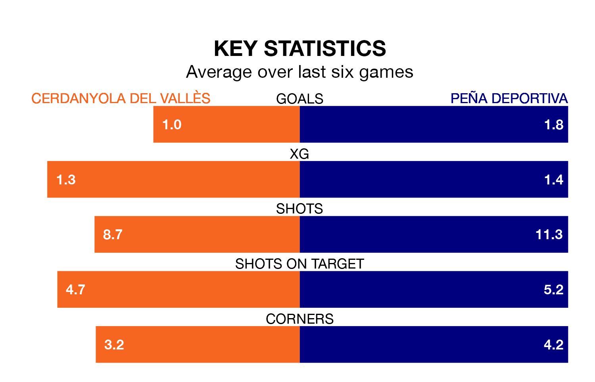

Peña Deportiva travel to Cerdanyola del Vallès on early Sunday in the Segunda División RFEF Group 3.
The visitors come into the game on the back of a win in their last match, having beaten Penya Independent 4-1 at home, with goals from Jon Elorza Roy and Jaume Tovar Seguí.
Cerdanyola del Vallès, meanwhile, lost their last match, 1-0 against Manresa.
With 40 goals in 29 games so far this season, Peña Deportiva are scoring more than average in the league with 1.4 goals per game. But they are conceding more than average too, letting in 48 goals at a rate of 1.7 per game.
Cerdanyola del Vallès, meanwhile, are below average scorers, with 1.1 goals per game, compared to a league average of 1.2. They have conceded 1.3 goals per game.
The home team are 15th in the table after 29 games, of which they have won eight and drawn eight, earning 32 points.
The visitors are four places ahead of Cerdanyola del Vallès in 11th, with 11 wins and six draws putting them on 39 points.
In the last three years, Cerdanyola del Vallès and Peña Deportiva have played each other on three occasions. Peña Deportiva won one of them and they drew the other.
Their last meeting was on November 26, when they played out a 0-0 draw.
Cerdanyola del Vallès are in mixed form in the Segunda División RFEF Group 3, with three wins and a draw from their last six games.
With three wins and three losses over that period, Peña Deportiva's form is slightly worse – they have taken nine points from 18, compared to the hosts' 10.
Updated: 16:41 (UTC), 04/04/24